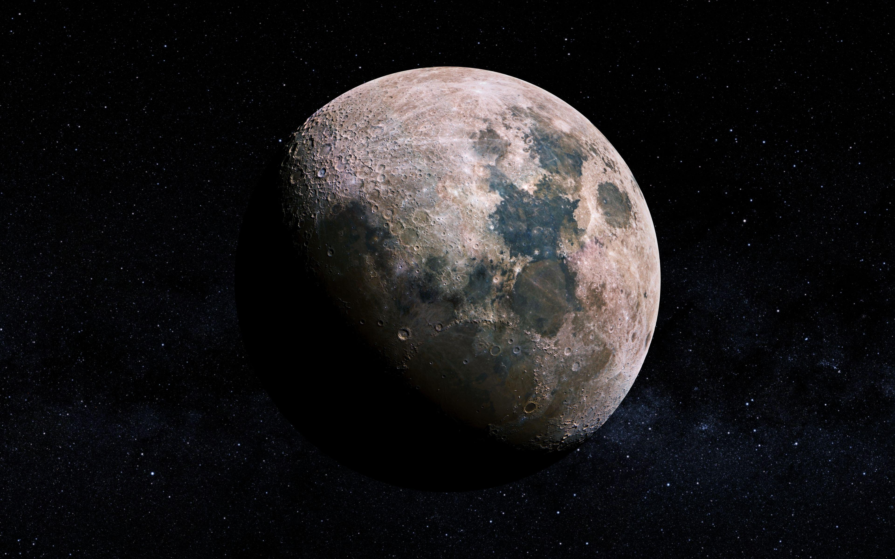

Twilight
When day softens into indigo, the first planets appear like quiet lanterns.

Departure
A cinematic flight through silence, gravity, and light. Enter the ring portal and begin your voyage across the cosmos.
“We are all connected to the Moon by wonder.”
Milky Way
Beyond the portal, the galactic band unfolds — a soft river of light made of a hundred billion suns. Dust lanes carve dark paths through glowing clouds.
You are inside the Milky Way now. Every spark ahead is a distant sun, older than Earth itself.

Home · Earth
Crew · Drift Mode

Companion Moon
Liftoff
Engines quiet. Earth glows like a living jewel below. An astronaut floats between worlds — and silence becomes the soundtrack of ascent.
From orbit, borders disappear. Oceans shine. Clouds spiral. You see one planet, one crew, one shared sky.
Mars · Red Frontier
Distant Moon · Deep Time
Deep Space
Nebulae bloom in violet fire. Worlds rush past the camera like sparks. Billions of stars wait beyond the dark — each one a possible beginning.
You are no longer a visitor. You are the voyage.
Solar Family
Eight worlds and one blazing star — a family born from the same cosmic cloud. Hover any planet to learn its story, size, and secrets.
Hover a glowing world to unlock its dossier.
Debris Field
Between Mars and Jupiter, leftover stones from the birth of the system drift in silence. Not a wall of rock — a sparse sea of ancient fragments.
Each one is a time capsule from 4.6 billion years ago.
Star Nursery
Inside glowing gas and dust, gravity gathers light into new suns. Pillars of cloud cradle infant stars — blue, fierce, and brand new.
Every star you know began in a place like this. Creation is quiet, patient, and endlessly bright.
Twin Suns
Two stars locked in gravity’s waltz — forever circling a shared center. Days would have two dawns. Shadows would split and braid.
Most stars in the galaxy are not alone. Companionship is cosmic.
Collapse
A giant star ends in a flash brighter than a galaxy. Elements forged in its heart — iron, gold, oxygen — scatter into space.
The calcium in your bones, the iron in your blood — gifts from ancient explosions.
Event Horizon
Gravity bends space itself. Stars stretch into glowing rings. At the edge of the abyss, time slows — and even light cannot return.
Beyond this line lies the unknown: a singularity where known physics fades.
Distant Beacon
A hungry black hole feeds on a swirling disk — and launches jets of light across billions of years. Among the brightest objects in the universe.
Looking at a quasar is looking deep into the early cosmos.
Visitor
Ice and dust wake as they near the Sun. A glowing coma blooms. Twin tails stream across the dark — one of gas, one of glittering grains.
Some return every lifetime. Others visit once and vanish forever. Either way, they are messengers from the outer cold.
Other Worlds
A world around another sun. Oceans of possibility — or deserts of fire. Thousands confirmed. Trillions waiting in the dark.
Somewhere, another sky may hold another curious mind looking back.
Northern Lights
Solar wind kisses Earth’s magnetic shield. Particles rain into the upper air and paint the night in green and violet fire.
Space weather made visible — a living curtain over the poles.
Skies
Above every ocean and desert, the same dark canopy opens. Constellations draw ancient maps. Meteors streak like brief wishes. The night sky is Earth’s oldest window into forever.
Look up — and you are already traveling. Every star you see is a message from deep time.
When day softens into indigo, the first planets appear like quiet lanterns.
Our galaxy arches overhead — a river of light made of a hundred billion suns.
Morning closes the curtain, but the cosmos never stops — it only waits for night.
Star Maps
Long before telescopes, humans connected stars into myths and guides. Hunters, bears, and scorpions — maps for sailors, farmers, and dreamers.
The patterns are ours. The stars are older than every story ever told.
Pale Blue Dot
From the outer dark, Earth is a single pixel of light — everyone you love, every story, on that pale blue mote.
“That’s here. That’s home. That’s us.” — Carl Sagan
Return
Eighteen chapters. Endless sky. The cosmos is curiosity — and every night is a new invitation to wonder, to explore, to go beyond the Moon.
Thank you for flying Beyond The Moon.